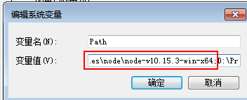
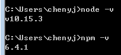
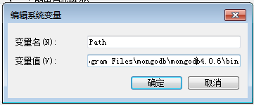
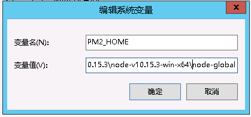
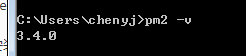

windows下node+mongodb+yapi安装教程
1. 安装node
1.1 登陆node官网下载windows解压版压缩包
1.2 将node解压后的目录配置到环境变量

1.3 查看安装版本

1.4 配置node
安装目录下新建两个文件夹node-cache 和node-global. 注意安装路径不要有空格
运行如下命令配置,即配置完毕
npm config set cache "E:\nodeInstall\node-v10.15.3-win-x64\node-cache" npm config set prefix "E:\nodeInstall\node-v10.15.3-win-x64\node-global"
1.5 安装PM2，PM2是运行node程序的强大插件
npm install pm2@latest -g
安装完后配置环境变量，将node-global目录配置到path中即可。
1.6 PM2启动
//PM2启动yapi指令：
pm2 start server/app.js --watch
//PM2关闭yapi指令
pm2 stop server/app.js --watch
--watch 方式启动yapi，永久守护这个yapi进程，避免服务不稳定网站挂掉。
2. 安装mongoDB
2.1 到mongoDB官网 下载mongoDB压缩版安装包
2.2 配置mongoDB环境变量

2.3 mongoDB配置,
在bin目录下新增mongoDB配置文件mongo.conf
dbpath=D:\Program Files\mongodb\mongodb4.0.6\MongoDBData #数据库路径
logpath=D:\Program Files\mongodb\mongodb4.0.6\mongo.log #日志输出文件路径
logappend=true #错误日志采用追加模式
journal=true #启用日志文件，默认启用
quiet=true #这个选项可以过滤掉一些无用的日志信息，若需要调试使用请设置为false
port=27017 #端口号 默认为2701
运行CMD, 输入mongod --config "D:\Program Files\mongodb\mongodb4.0.6\bin\mongo.conf" --install --serviceName "MongoDB"将mongoDB安装到服务，启动服务，在浏览器输入localhost:27017如果出现以下信息即表示安装成功。
It looks like you are trying to access MongoDB over HTTP on the native driver port.
2.4 配置mongoDB数据库用户
打开命令行
# 1. #启动MONGDB服务
# 2. 运行命令行
C:\Users\chenyj> mongo
use admin #切换到admin数据库
switched to db admin
#创建dba用户
db.createUser(
... {
... user: "root",
... pwd: "infinova1",
... roles: [ { role: "userAdminAnyDatabase", db: "admin" } ]
... }
... )
#创建yapi数据库
use yapi
switched to db yapi
给yapi数据库添加test1用户,权限为读写
db.createUser(
... {
... user: "yapi",
... pwd: "infinova",
... roles: [
... { role: "readWrite", db: "yapi" }
... ]
... }
... )
3. 安装yapi
3.1下载yapi
mkdir yapi
cd yapi
git clone https://github.com/YMFE/yapi.git vendors //或者下载 zip 包解压到 vendors 目录（clone 整个仓库大概 140+ M，可以通过 `git clone --depth=1 https://github.com/YMFE/yapi.git vendors` 命令减少，大概 10+ M）
cp vendors/config_example.json ./config.json //复制完成后请修改相关配置
cd vendors
npm install --production --registry https://registry.npm.taobao.org
npm run install-server //安装程序会初始化数据库索引和管理员账号，管理员账号名可在 config.json 配置
3.2 配置yapi
打开yapi目录，新建 config.json文件如下
{
"port": "*****",
"adminAccount": "********",
"db": {...},
"mail": {
"enable": true,
"host": "smtp.*.com", //邮箱服务器
"port": 465, //端口
"from": "***@szinfinova.com", //发送人邮箱
"auth": {
"user": "***@szinfinova.com", //邮箱服务器账号
"pass": "*****" //邮箱服务器密码
}
},
"db": {
"servername": "127.0.0.1", //配置数据库
"DATABASE": "yapi", //数据库名
"port": 27017, //端口
"user": "yapi", //用户名
"pass": "infinova", //密码
"authSource": ""
}
}
3.3 启动yapi
在vendors 目录下新建startup.bat文件，在里面添加内容如下,在启动mongoDB数据库服务后，双击startup.bat 即可启动yapi项目。
node server/app.js
3.3 PM2启动
3.3.1 安装pm2
npm install -g pm2
3.3.2 pm2配置环境变量

3.3.3 查看pm2版本
## 打开CMD命令行 输入
pm2 -v

3.3.4 pm2启动yapi
查看1.6
4. 安装注意
- 如果安装完node,npm命令无响应，可以删掉
C:\Users（用户）\你的用户名\.npmrc这个文件。 - 安装路径尽量不要有空格
- 如果已经存在安装，要部署到其他电脑上，可以将安装好的node文件夹、mongoDB文件夹、yapi文件夹复制到目标环境，运行CMD, 输入
mongod --config "D:\Program Files\mongodb\mongodb4.0.6\bin\mongo.conf" --install --serviceName "MongoDB"将mongoDB安装mongoDB服务到新电脑环境（注意路径），配置好mongoDB和node的环境变量，双击startup即可启动yapi。